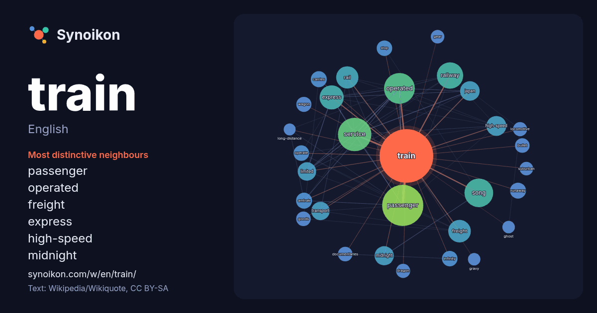

English · word of the day list
train
The words found around it in 1791 instances from English Wikipedia, Wikiquote and Hacker News.

Most distinctive neighbours
- passenger 73×
- operated 39×
- freight 32×
- express 31×
- high-speed 27×
- midnight 24×
- rail 24×
- runaway 19×
- amtrak 18×
- railway 17×
- infinity 17×
- wagon 15×
- bullet 15×
- transport 15×
- service 15×
- song 14×
- limited 13×
- japan 13×
- dragon 13×
- carries 13×
× = how many times more often than in general English Wikipedia text.
Most frequent neighbours
- passenger 120
- service 79
- operated 67
- song 58
- american 52
- railway 49
- express 41
- film 36
- freight 36
- rail 35
- album 32
- station 30
- company 29
- high-speed 28
- japan 27
- midnight 26
- run 25
- limited 24
- transport 24
- line 23
In context
- A train (from Old French trahiner, from Latin trahere, "to pull, to draw") is a series of connected vehicles that run along a railway track and transport Wikipedia snippets · Train
- Wikiquote has quotations related to Train. A train is a form of rail transport comprising a Wikipedia snippets · Train (disambiguation)
- A Train may refer to: The A (New York City Subway service) A Division (New York City Subway) Wikipedia snippets · A Train
- Train Train may refer to: Train+Train, a 2000 Japanese light novel series Train*Train, a manga by Eiki Eiki "Train, Train", a song by Blackfoot "Train Wikipedia snippets · Train Train
- The Train may refer to: The Train (1964 film), an American war film starring Burt Lancaster and Paul Scofield The Train (1970 film), an Indian Hindi suspense Wikipedia snippets · The Train
- bullet train in . Bullet train may refer to: High-speed rail, a type of rail transport network utilizing trains that run Wikipedia snippets · Bullet train
- A train station, railroad station, or railway station is a railway facility where trains stop to load or unload passengers, freight, or both. It generally Wikipedia snippets · Train station
- Train is an American pop rock band from San Francisco that formed in 1993. As of 2025, the band consists of Pat Monahan (lead vocals), Butch Walker (guitar Wikipedia snippets · Train (band)
More English words
- art
- autumn
- bell
- bread
- bridge
- cat
- city
- climate
- clock
- death
- desert
- dog
- family
- food
- forest
- garden
- god
- gold
- health
- heart
- history
- honey
- horse
- island
- language
- life
- map
- mirror
- money
- mother
- mountain
- nature
- power
- rain
- road
- salt
- science
- shadow
- silence
- song
- star
- storm
- summer
- tea
- time
- truth
- water
- winter
- work
Precomputed on 2026-10-09 with default settings (±5 words, medium corpus). The interactive map can refresh it with live data.